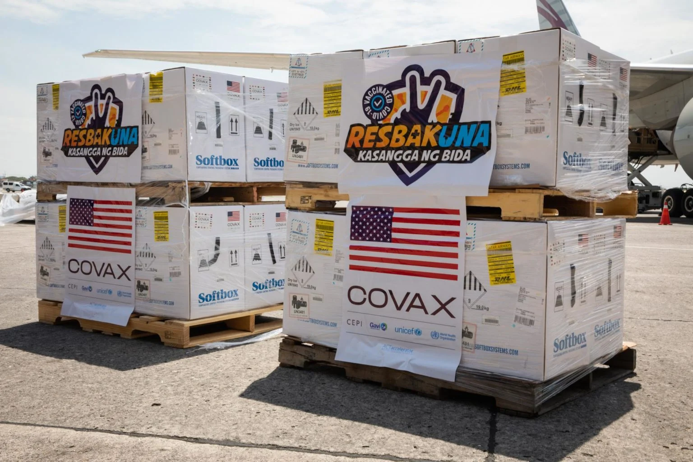

Covid19-Pandemic News >PH should be producing COVID-19 vaccine by now, say Sotto, Bello.
Author: John Eric Mendoza | March 20, 2022
(FILE) Doses of Pfizer COVID-19 vaccine from the United States
MANILA, Philippines — The Philippines should now be producing vaccines against COVID-19 instead of importing them aftertwo years since the pandemic started, vice presidential candidates Senate President Vicente “Tito” Sotto III and former Akbayan Rep. Walden Bello said.
Sotto and Bello and five other vice presidential hopefuls who attended the PiliPinas Debates organized by Commission on Elections (Comelec) on Sunday were asked about their plans in dealing with the pandemic should they get elected in the upcoming May national elections.
Sotto said the country should stop relying on imported vaccines and other medical equipment and instead start manufacturing them.
“Ngayon para mapaghandaan na ito at hindi na ito maulit kahit ano pang virus ang dumating sa atin, dapat tayo na ang nagma-manufacture ng bakuna, ng PPEs (personal protection equipment), mga syringes, mga needles pati cotton para matigil na ang importation. Yun ang dapat asikasuhin ng gobyerno na tayo na ang nagpo-produce nitong mga ito,” Sotto said.
(To prepare for this and for other future viruses, we should be able to manufacture our own vaccines, PPEs, syringes, needles, even cotton to stop the importation. That’s what the government should work on. We should be the one producing these.)
Bello then agreed with Sotto on the need to locally produce the COVID-19 vaccines.
“Sumasang-ayon ako kay (I agree with) Senator Sotto that we should really try developing our manufacturing capacity for vaccines,” Bello said.
Bello pointed out that multinational pharmaceutical companies are “blocking” global south countries like the Philippines from possessing the technology to produce COVID-19 vaccines.
“The government must really actively work with other countries in the global south to break this monopoly on trade related intellectual property rights,” Bello added.
In February, Sotto engaged Bello in a heated exchange on the government’s war against illegal drugs during the vice presidential debate hosted by CNN Philippines.
Tweet this article
"News That Hits Home, Hundred Stories, One Truth"
Copyright © Calacday & Escanilla News 2022. All Rights Reserved.